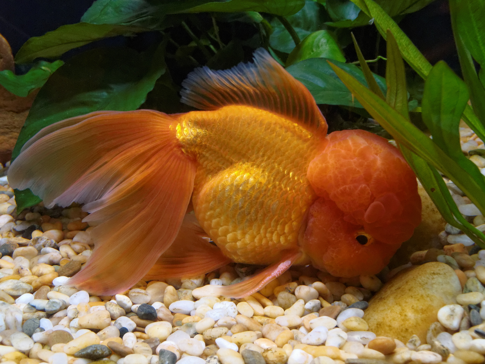

Oranda Goldfish

Appearance and Characteristics
According to The Spruce Pets, Oranda goldfish have a double tail similar to the Fantail goldfish. They are known for the fleshy growth on top of their heads, called a wen. Their colors and appearance can vary. The wen may overgrow due to diet or genetics, and excessive growth should be evaluated by a veterinarian.
Origin and History
Orandas are fancy domesticated goldfish selectively bred in China and Japan. They are believed to have been developed through breeding Lionhead and Japanese Fantail goldfish. This variety was created through human selection and does not exist naturally in the wild.
Tankmates and Compatibility
Orandas are slower swimmers and should be housed with other slow-moving fancy goldfish, such as Lionheads, Fantails, and Black Moors. Avoid keeping them with fast Comets or common goldfish, which may outcompete them for food. A tank of at least 30 gallons is recommended.
Breeding
During spawning, males nudge females, which may release up to 1,000 eggs over aquatic plants. The eggs hatch in about a week. The young fish, called fry, need appropriate high-protein food as they develop.
Breed Overview
Length: Approximately 6 inches
Lifespan: Approximately 12 years
Physical characteristics: Medium to
short body, a wen on the head, and variable colors.